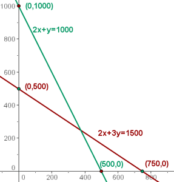
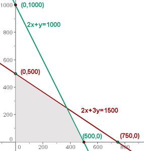
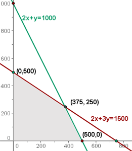
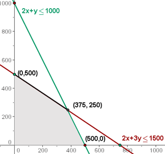

Ejemplos de programación lineal
Unos grandes almacenes encargan a un fabricante pantalones y chaquetas deportivas.
El fabricante dispone para la confección de 750 m de tejido de algodón y 1000 m de tejido de poliéster. Cada pantalón precisa 1 m de algodón y 2 m de poliéster. Para cada chaqueta se necesitan 1.5 m de algodón y 1 m de poliéster.
El precio del pantalón se fija en 50 € y el de la chaqueta en 40 €.
¿Qué número de pantalones y chaquetas debe suministrar el fabricante a los almacenes para que estos consigan una beneficio máxima?
1 Elección de las incógnitas.
x = número de pantalones
y = número de chaquetas
2 Función objetivo
f(x,y)= 50x + 40y
3 Restricciones
Para escribir las restricciones vamos a ayudarnos de una tabla:
| pantalones | chaquetas | disponible | |
|---|---|---|---|
| algodón | 1 | 1,5 | 750 |
| poliéster | 2 | 1 | 1000 |
x + 1.5y ≤ 750  2x+3y ≤ 1500
2x+3y ≤ 1500
2x + y ≤ 1000
Como el número de pantalones y chaquetas son números naturales, tendremos dos restricciones más:
x ≥ 0
y ≥ 0
4 Hallar el conjunto de soluciones factibles
Tenemos que representar gráficamente las restricciones.
Al ser x ≥ 0 e y ≥ 0, trabajaremos en el primer cuadrante.
Representamos las rectas, a partir de sus puntos de corte con los ejes.

Resolvemos gráficamente la inecuación: x + 1.5y ≤ 750, para ello tomamos un punto del plano, por ejemplo el (0,0).
0 + 1.5· 0 ≤ 750
0 ≤ 750 entonces el punto (0,0) se encuentra en el semiplano donde se cumple la desigualdad.
De modo análogo resolvemos 2x + y ≤ 1000.
2 · 0 + 0 ≤ 1 000
La zona de intersección de las soluciones de las inecuaciones sería la solución al sistema de inecuaciones, que constituye el conjunto de las soluciones factibles.

5 Calcular las coordenadas de los vértices del recinto de las soluciones factibles.
La solución óptima, si es única, se encuentra en un vértice del recinto. Estas son las soluciones a los sistemas:
2x + 3y = 1500; x = 0 (0, 500)
2x + y = 1000; y = 0 (500, 0)
2x + 3y =1500; 2x + y = 1000 (375, 250)

6 Calcular el valor de la función objetivo
En la función objetivo sustituimos cada uno de los vértices.
f(x, y) = 50x + 40y
f(0, 500) = 50 · 0 + 40 · 500 = 20 000 €
f(500, 0) = 50 · 500 + 40 · 0 = 25 000 €
f(375, 250) = 50 · 375 + 40 · 250 = 28 750 € Máximo
La solución óptima es fabricar 375 pantalones y 250 chaquetas para obtener un beneficio de 28750 €.
Solución múltiple
La solución no siempre es única, también podemos encontrarnos con una solución múltiple.
Si la función objetivo del ejercicio anterior hubiese sido:
f(x,y)= 20x + 30y
f(0,500) = 20 · 0 + 30 · 500 = 15 000 € Máximo
f(500, 0) = 20 · 500 + 30 · 0 = 10 000 €
f(375, 250) = 20 · 375 + 30 · 250 = 15 000 € Máximo
En este caso todos los pares, con soluciones enteras, del segmento trazado en negro serían máximos.

f(300, 300)= 20 · 300 + 30 · 300 = 15 000 € Máximo